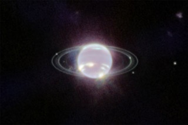
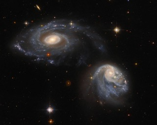
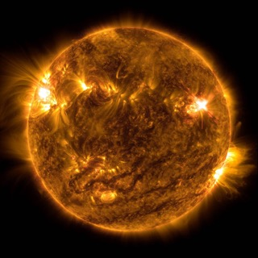

|
|
||
|  |  |  |
|
According to Nasa, "on Sept. 21, 2022, the James Webb Space Telescope delivered the clearest view of Neptune’s rings in more than 30 years".
|
According to Nasa, this picture represents "the two interacting galaxies making up the pair known as Arp-Madore 608-333 floating side by side taken from the NASA/ESA Hubble Space Telescope.". |
According to Nasa, "the Sun released an X1 solar flare, captured by our Solar Dynamics Observatory (SDO) on Oct. 2, 2022".
|